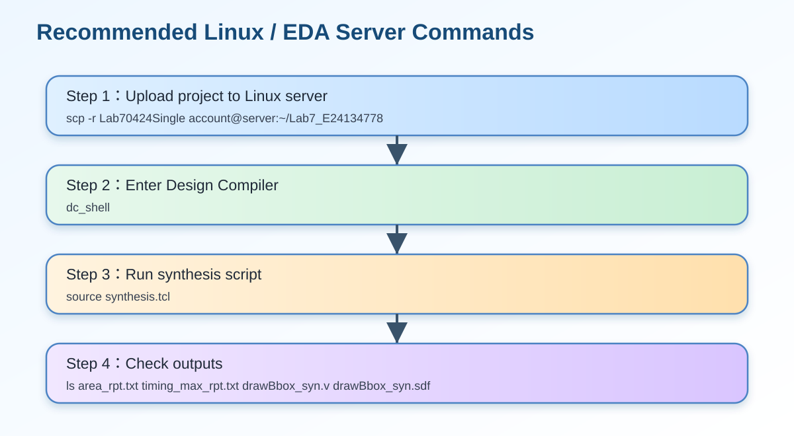

12. 十二、Synthesis Constraint 與結果
一、題目說明
本題要求將已完成的 drawBbox.v 進行 synthesis，也就是把 RTL Verilog 轉換成標準元件庫可實作的 gate-level netlist。
作業指定的重點包含：clock period 不得超過 10.0 ns、不可動到 clock network、使用指定 wire load model，
並輸出 drawBbox_syn.v 與 drawBbox_syn.sdf，供後續 post-synthesis simulation 使用。
這一題不是單純「跑工具」，而是要證明設計除了 RTL 功能正確之外，也能通過合成、產生面積報告、產生 timing report， 並可用 SDF 檔案進行 gate-level timing simulation。

二、Synthesis Constraints 完整說明
| 項目 | 設定值 | 詳細說明 |
|---|---|---|
| Clock period | 10.0 ns | 設計必須在 10 ns 週期內完成每個 clock cycle 的 combinational delay。若 critical path 超過 10 ns，就會產生 setup violation。 |
| Don’t touch network | clk |
clock network 不應被工具任意最佳化或重命名，以避免後續 gate-level simulation 與 SDF annotation 出現連接問題。 |
| Wire load model | N16ADFP_StdCellss0p72vm40c |
用來估計未實際 layout 前的 wire delay 與 loading，影響 timing report 的結果。 |
| Synthesized Verilog | drawBbox_syn.v |
Design Compiler 產生的 gate-level netlist，之後要用它取代 RTL 做 post-synthesis simulation。 |
| Timing SDF | drawBbox_syn.sdf |
Standard Delay Format，記錄 gate-level delay，用於 timing annotation。 |
| Area report | area_rpt.txt |
報告 Summary 裡的 Area 應填入此檔案中的 Total cell area。 |
三、synthesis.tcl 指令逐行解釋
以下為本 Lab 使用的 synthesis script。每一行都對應到合成流程中的一個必要步驟。
read_file -format verilog {./drawBbox.v}
current_design drawBbox
link
set_host_options -max_core 8
source ./DC.sdc
check_design
uniquify
set_fix_multiple_port_nets -all -buffer_constants [get_designs *]
set_max_area 0
compile -map_effort high -area_effort high
report_timing -path full -delay max -nworst 1 -max_paths 1 -significant_digits 4 -sort_by group > ./timing_max_rpt.txt
report_timing -path full -delay min -nworst 1 -max_paths 1 -significant_digits 4 -sort_by group > ./timing_min_rpt.txt
report_area -nosplit > ./area_rpt.txt
report_power -analysis_effort low > ./power_rpt.txt
write -hierarchy -format verilog -output {./drawBbox_syn.v}
write_sdf -version 3.0 -context verilog {./drawBbox_syn.sdf}| 指令 | 用途 | 報告中可說明的重點 |
|---|---|---|
read_file |
讀入 RTL Verilog | 指定 top RTL 來源為 drawBbox.v。 |
current_design drawBbox |
設定目前 top module | 告訴 DC 主要合成目標是 drawBbox。 |
link |
連結設計與 library | 確認 module 與 standard cell library 可以被正確解析。 |
source ./DC.sdc |
載入 timing constraint | clock period、input/output delay 或其他 constraint 由 SDC 檔案提供。 |
check_design |
檢查設計合法性 | 可檢查未連接 port、多重驅動、結構錯誤等問題。 |
uniquify |
階層模組唯一化 | 避免多個 instance 共用同一設計造成命名衝突。 |
set_fix_multiple_port_nets |
修正 multiple-port nets | 避免直接 assign 或多 port net 在 gate-level netlist 中造成問題。 |
compile -map_effort high -area_effort high |
執行高強度合成 | 要求工具同時進行 mapping 與 area optimization。 |
report_timing -delay max |
產生 setup timing report | 用來檢查 critical path 是否滿足 10 ns constraint。 |
report_timing -delay min |
產生 hold timing report | 用來檢查 hold path 是否有過短問題。 |
report_area |
產生 area report | Summary 表格的 Area 應填 Total cell area。 |
write / write_sdf |
輸出 netlist 與 SDF | 產生後續 post-synthesis simulation 所需檔案。 |

四、目前實驗資料與可填結果
| 欄位 | 目前可填內容 | 來源與說明 |
|---|---|---|
| Clock Period | 10.0 ns | 由題目與 DC.sdc constraint 指定。 |
| P4 Simulation Time | 24011725 ns | ModelSim log 中 Time: 24011725 ns。 |
| Total Cell Area | 待補 | 需於 Design Compiler 成功執行後，從 area_rpt.txt 找 Total cell area。 |
| Area × P4 Simulation Time | 待補 | 公式為 Total cell area × P4 Simulation Time，Area 未取得前不可亂填。 |
| Max Timing Report | 待補 | 需從 timing_max_rpt.txt 讀取 worst path 與 slack。 |
area_rpt.txt、timing_max_rpt.txt、drawBbox_syn.v、drawBbox_syn.sdf。
因此本頁已將這些欄位標示為「待補」。這樣寫比自行填假數字更安全，也符合報告誠實性。
五、如何產生 area_rpt.txt 與 synthesis output
Windows PowerShell 無法直接執行 dc_shell，因為 Design Compiler 通常安裝在學校 Linux / EDA server。
因此 synthesis 需要在 Linux server 上執行。

建議操作指令
# 1. 進入專案資料夾
cd ~/Lab7_E24134778
# 2. 進入 Design Compiler
dc_shell
# 3. 執行 synthesis script
source synthesis.tcl
# 4. 離開 DC
exit
# 5. 檢查產生檔案
ls area_rpt.txt timing_max_rpt.txt timing_min_rpt.txt power_rpt.txt drawBbox_syn.v drawBbox_syn.sdf
# 6. 查看 area
cat area_rpt.txt六、area_rpt.txt 要看哪一行？
打開 area_rpt.txt 後，不要填 Combinational area 或 Noncombinational area，Summary 表格的 Area 應填：
------------------------------------------
Design area summary
------------------------------------------
Combinational area: xxxxx.xxx
Noncombinational area: xxxxx.xxx
Total cell area: yyyyy.yyy ← Summary 的 Area 填這個
------------------------------------------七、Post-Synthesis Simulation 檢查
合成後需使用 drawBbox_syn.v 與 drawBbox_syn.sdf 進行 gate-level simulation。
此步驟可確認合成後的邏輯行為與 RTL 一致，並加入實際 cell delay。
| 檔案 | 用途 |
|---|---|
drawBbox_syn.v | 合成後 gate-level Verilog netlist。 |
drawBbox_syn.sdf | 標準延遲檔，用於 timing annotation。 |
timing_max_rpt.txt | setup timing report，檢查 worst setup path。 |
timing_min_rpt.txt | hold timing report，檢查 hold path。 |
area_rpt.txt | cell area report，填入 Summary 的 Area 欄位。 |
八、如果 synthesis 遇到問題，如何最佳化？
切 FSM stage
將 Gray、Gaussian、Otsu、CCL、BBox、Draw 分段處理，避免單一 state 同時做過多運算。
加入 pipeline register
在長 combinational datapath 中加入 register，可縮短 critical path，提高 timing closure 機率。
Shift 取代除法
Gaussian kernel 權重總和為 16，可用 >> 4 取代除法，降低 area 與 delay。
Resource sharing
Otsu threshold 使用同一組 accumulator 反覆掃描 0~255，不為每個 threshold 建獨立硬體。
九、報告可直接貼上的正式答案
本設計使用 Synopsys Design Compiler 對 drawBbox.v 進行 synthesis。合成流程首先讀入 RTL 檔案，
並將目前設計指定為 drawBbox，接著透過 link 與 standard cell library 連結。
之後載入 DC.sdc 中的 timing constraints，其中 clock period 設為 10.0 ns，並指定不可修改 clock network。
完成 design check 與 uniquify 後，使用 compile -map_effort high -area_effort high 進行高強度合成與面積最佳化。
合成完成後，工具會產生 timing_max_rpt.txt、timing_min_rpt.txt、area_rpt.txt 與
power_rpt.txt，分別用於檢查 setup timing、hold timing、cell area 與 power。
其中 Summary 表格的 Area 欄位應填入 area_rpt.txt 中的 Total cell area。
此外，Design Compiler 會輸出 drawBbox_syn.v 與 drawBbox_syn.sdf，
作為 post-synthesis gate-level simulation 的輸入檔案。
目前 RTL simulation 已通過 P1～P4 全部 patterns，且總錯誤數為 0。P4 模擬時間為 24011725 ns。 後續需於學校 Linux / EDA server 執行 Design Compiler，補上 area report、max timing report 與 gate-level simulation 結果。